În stînga este slide-ul din curs, în dreapta aceeași figură sau același tabel, calculat în browser din aceleași date. Butonul ▶ modifică parametrul pas cu pas; tabelele și exemplele lucrate se recalculează odată cu el. Abrevieri: CC (close-to-close, închidere–închidere), P (Parkinson), GK (Garman–Klass), RS (Rogers–Satchell), YZ (Yang–Zhang), OHLC (open, high, low, close: deschidere, maxim, minim, închidere), EWMA (exponentially weighted moving average, media mobilă ponderată exponențial), RV (realised variance, varianța realizată), ACF (autocorrelation function, funcția de autocorelație), ARCH-LM (testul multiplicatorului Lagrange pentru efecte ARCH), GARCH (generalised autoregressive conditional heteroskedasticity), VIX (indicele de volatilitate al Cboe), MSE (mean squared error, eroarea pătratică medie), QLIKE (quasi-likelihood, cvasi-verosimilitate), MZ (Mincer–Zarnowitz), DM (Diebold–Mariano).
Volatilitatea: definiție și caracter latent · Volatilitatea istorică și alegerea ferestrei · EWMA și RiskMetrics · Estimatori de amplitudine (range-based) · Volatilitatea realizată · Volatility clustering · Comportamentul pe termen lung, VIX și efectul de levier · Evaluarea prognozelor de volatilitate
Volatilitatea: definiție și caracter latent
Patru piețe, același tipar
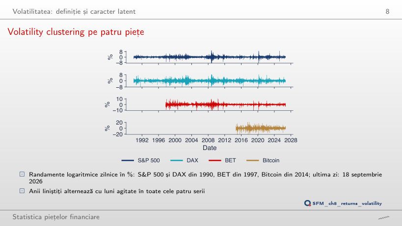
Răspuns
30 de zile, față de 0,0053 așteptate dacă randamentele ar urma distribuția Normală. DAX are 20 de astfel de zile, BET 31, Bitcoin 8. Cea mai mare variație a S&P 500 (−12,8% pe 16 martie 2020) reprezintă 11,3 abateri standard; pentru cele patru piețe valorile sînt între 8,9 și 13,3.
Interpretarea volatilității pe patru piețe
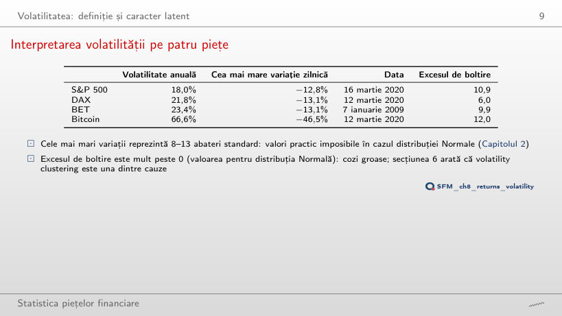
Volatilitatea pe patru piețe
Răspuns
Bitcoin: 46,5/3,49 = 13,3 abateri standard, față de 12,8/1,13 = 11,3 la S&P 500, 9,5 la DAX și 8,9 la BET. Pentru distribuția Normală, probabilitatea unei variații de peste 9 abateri standard este de ordinul 10⁻¹⁹: excesul de boltire (10,9; 6,0; 9,9; 12,0) arată cozi groase pe toate cele patru piețe.
Exemplu rezolvat: anualizarea volatilității
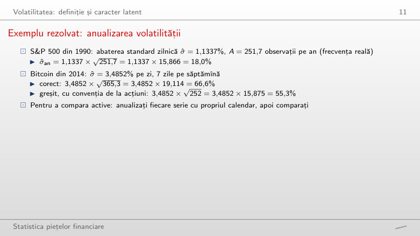
Exemplu lucrat: anualizarea
Răspuns
Bitcoin scade de la 66,6% la 55,3% (−16,9%, factorul √(252/365,3) = 0,831); S&P 500 rămîne 18,0%, DAX 21,8%, iar BET trece de la 23,4% la 23,5%, pentru că frecvența lor reală (251,7; 253,0; 249,9 observații pe an) este aproape de 252. Cu A = 252, Bitcoin ar părea mai puțin riscant cu o șesime.
Volatilitatea istorică și alegerea ferestrei
S&P 500: trei ferestre, trei răspunsuri
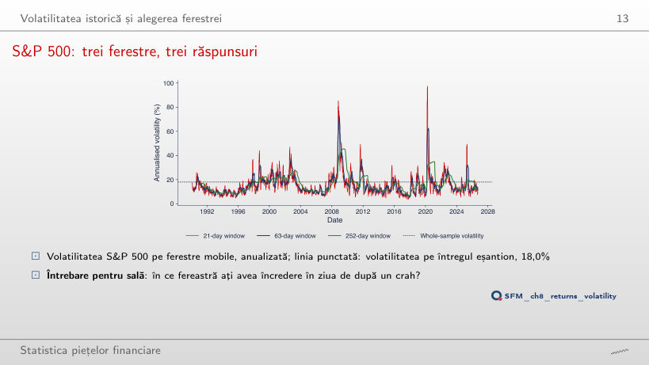
Răspuns
O fereastră scurtă sau EWMA: media pe o fereastră lungă include încă zilele liniștite dinaintea crahului. Fereastra de 21 de zile a urcat la 97,5% pe 6 aprilie 2020; cea de 252 de zile a atins maximul, 45,6%, abia pe 15 iulie 2009, la cîteva luni după vîrful crizei din 2008. Prețul reacției rapide este zgomotul: variația zilnică tipică a lui ln σ̂ este 6,7% la 21 de zile și 0,8% la 252 de zile.
Precizia unei volatilități de selecție
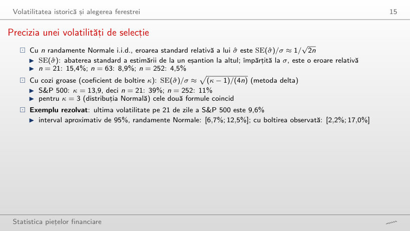
Exemplu lucrat: intervalul pentru ultima volatilitate
Răspuns
39,1%, de 2,54 ori mai mult decît 15,4% din formula pentru randamente Normale (raportul este √((κ − 1)/2)). Pentru ultima volatilitate pe 21 de zile, 9,6%, intervalul aproximativ de 95% este [6,7%; 12,5%] cu randamente Normale și [2,2%; 17,0%] cu boltirea observată. Chiar și cu n = 252, eroarea relativă rămîne 11,3%; 4,5% este valoarea pentru n = 252 cu randamente Normale.
EWMA și RiskMetrics
Ponderile EWMA față de ponderile unei ferestre mobile
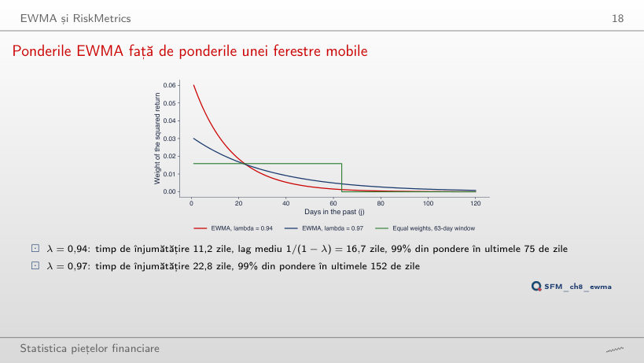
Răspuns
458,2 zile, aproape doi ani de tranzacționare: ln 0,01/ln 0,99. Timpul de înjumătățire este 69,0 zile, iar lagul mediu 100 de zile. Pentru orice λ, numărul de zile care poartă 99% din pondere este de 6,64 ori timpul de înjumătățire (ln 0,01/ln 0,5).
Exemplu rezolvat: o actualizare EWMA
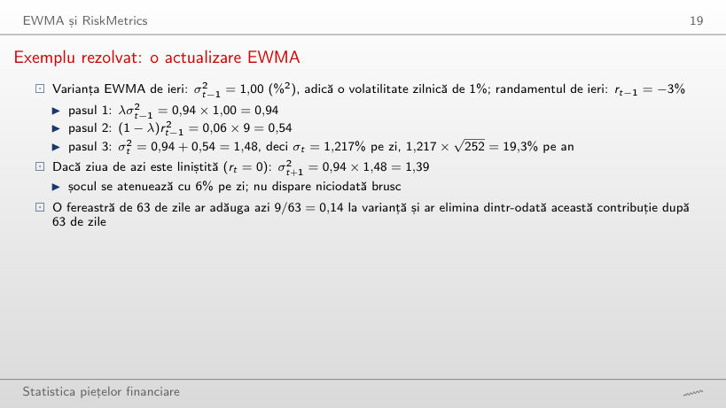
Exemplu lucrat: o actualizare EWMA
Răspuns
2,60 = 0,80 × 1 + 0,20 × 9, deci σ(t) = 1,61% pe zi. Un λ mai mic dă o pondere mai mare (1 − λ = 0,20) șocului de ieri: reacția este mai puternică, iar memoria mai scurtă (timpul de înjumătățire scade de la 11,2 la 3,1 zile). Varianta 1,40 uită să ridice randamentul la pătrat.
Ghost effect: martie–iunie 2020
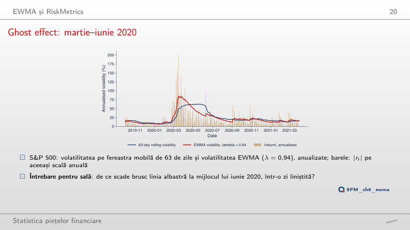
Răspuns
Pe 15 iunie 2020, randamentul din 16 martie 2020 (−12,8%) a ieșit din fereastra de 63 de zile: volatilitatea pe fereastră a scăzut de la 50,4% la 43,0% într-o singură zi, fără nicio știre. Cu o fereastră de 21 de zile, aceeași zi de crah iese pe 15 aprilie 2020 (de la 78,8% la 64,0%), cu 126 de zile pe 14 septembrie 2020. EWMA s-a modificat în ziua respectivă cu doar −0,9 puncte procentuale.
Estimatori de amplitudine (range-based)
O zi de tranzacționare în datele OHLC
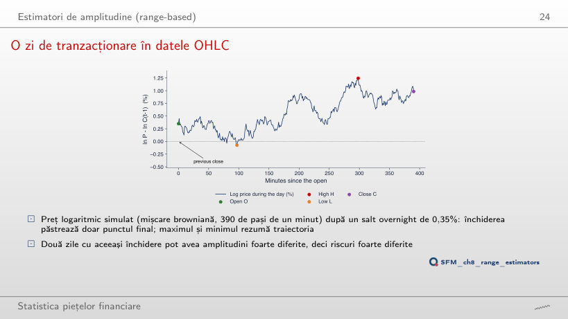
Răspuns
Randamentul zilei r = o + c crește de la 0,985% la 1,635%, iar r² de la 0,970 la 2,672. Maximul, minimul și închiderea sînt măsurate față de deschiderea zilei, deci Parkinson (0,627), Garman–Klass (0,714) și Rogers–Satchell (0,681) rămîn aceleași: estimatorii de amplitudine nu văd varianța nopții.
Estimatorul Parkinson (1980)
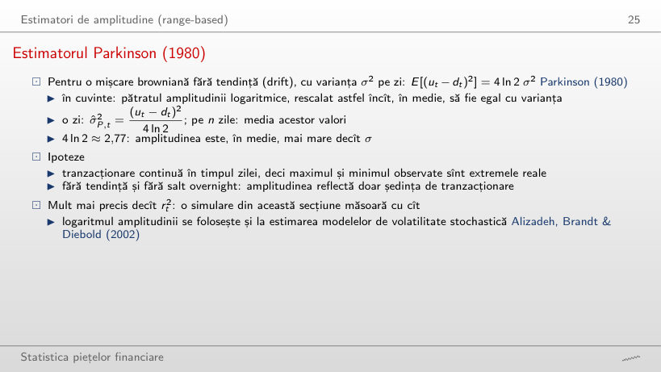
Exemplu lucrat: Parkinson din H și L, ziua cu cea mai mare amplitudine a anului
Răspuns
σ̂²_P = 8,421²/2,7726 = 25,57, deci σ̂_P = 5,06% pe zi. Amplitudinea depășește σ în medie de √(4 ln 2) = 1,67 ori, iar împărțirea la 4 ln 2 corectează exact acest lucru. Randamentul închidere–închidere al zilei a fost 8,88%, cu r² = 78,87, de trei ori estimarea Parkinson. Varianta 8,42% este amplitudinea nescalată, iar 3,04% împarte amplitudinea la 4 ln 2 fără rădăcina pătrată.
Garman–Klass (1980) și Rogers–Satchell (1991)
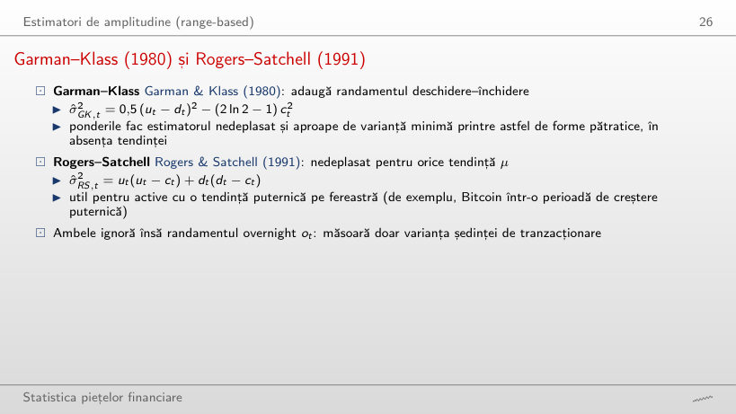
Exemplu lucrat: Garman–Klass și Rogers–Satchell
Răspuns
652,5 (%²) = 1,390 × 16,284 + (−33,626) × (−18,732) = 22,6 + 629,9, deci σ̂_RS = 25,5% pe zi. Garman–Klass dă 527,4, Parkinson 442,2. Ziua a avut o tendință puternică (c = −14,9%), iar Rogers–Satchell, nedeplasat pentru orice tendință, dă cea mai mare estimare. Varianta 1 133 = u² + d² omite termenii cu c.
Yang–Zhang (2000): adăugarea nopții
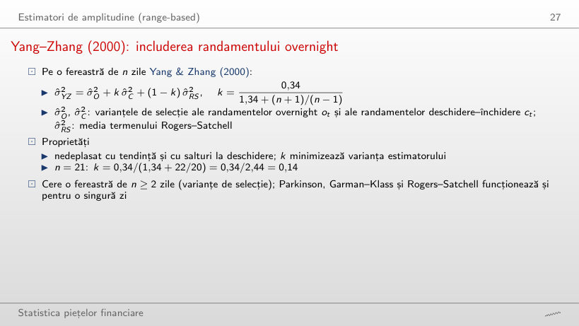
Exemplu lucrat: ponderea k și estimatorul Yang–Zhang
Răspuns
k(126) = 0,34/(1,34 + 127/125) = 0,144, iar limita pentru n mare este 0,34/2,34 = 0,145; pentru n = 2, k = 0,078. Ponderea variază puțin cu n: Yang–Zhang este dominat de varianța nopții σ̂²_O și de termenul Rogers–Satchell, cu ponderea 1 − k ≈ 0,86.
Exemplu rezolvat: S&P 500 pe 16 martie 2020
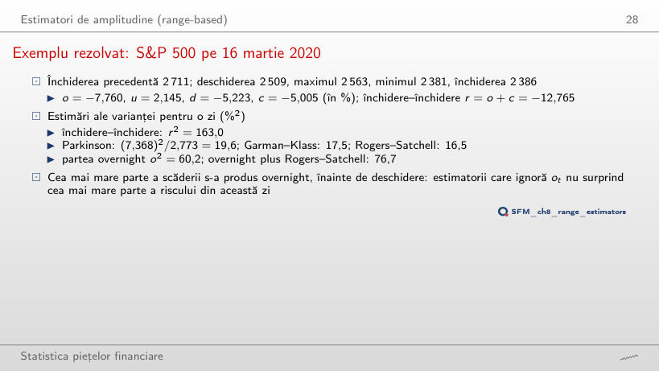
Exemplu lucrat: o zi, șase estimări
Răspuns
o² = 60,2, adică 37% din r². Restul nu se împarte simplu, pentru că r² = o² + c² + 2oc: aici c = −5,005%, c² = 25,0 și 2oc = 77,7. Estimatorii care ignoră noaptea (Parkinson 19,6, Garman–Klass 17,5, Rogers–Satchell 16,5) văd mai puțin de o optime din r²; overnight plus Rogers–Satchell dă 76,7. Varianta 61% compară randamentele, nu pătratele lor (7,760/12,765), iar 12% este raportul Parkinson/r².
Eficiența estimatorilor prin simulare
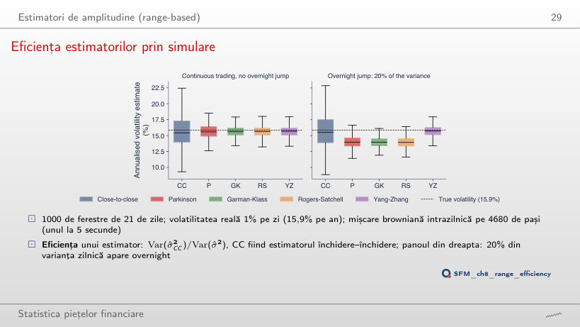
Răspuns
Rămîne aproape aceeași: 10,3 la n = 5 și 8,0 la n = 63 (rulări suplimentare ale simulării). Ambele varianțe scad aproximativ ca 1/n, deci raportul lor se schimbă puțin: cîștigul de eficiență vine din informația dintr-o zi, nu din lungimea ferestrei. Cu salt overnight, deplasarea Parkinson, GK și RS rămîne în jur de −22% la orice n.
Interpretarea simulării: precizie și deplasare
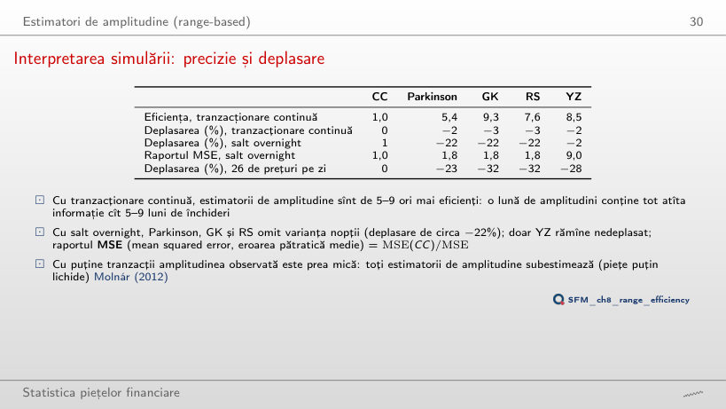
Eficiență, deplasare și raportul MSE (1 000 de ferestre)
Răspuns
MSE = varianță + deplasare². Cu salt overnight, Parkinson, GK și RS măsoară doar ședința și subestimează varianța cu circa 22%, iar eroarea lor pătratică medie este dominată de această deplasare, deși varianța lor este de 8,8–13,6 ori mai mică decît a CC. Yang–Zhang adaugă σ̂²_O: deplasarea −2% și raportul MSE 9,0.
Date reale: cinci estimatori, cinci active
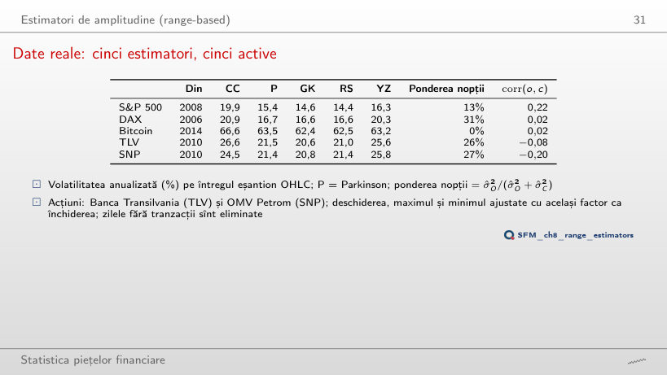
Volatilitatea anualizată (%) pe eșantionul OHLC
Răspuns
Var(r) = Var(o) + Var(c) + 2Cov(o, c), iar la S&P 500 corr(o, c) = 0,22; o explicație probabilă sînt prețurile stale (neactualizate) din deschiderea indicelui. La DAX și Bitcoin corelația este 0,02, iar raportul YZ/CC este 0,97 și 0,95. Ponderea nopții (13%) este deja inclusă în YZ, iar S&P 500 nu are zile cu H = L.
S&P 500: estimări pe 21 de zile din 2019
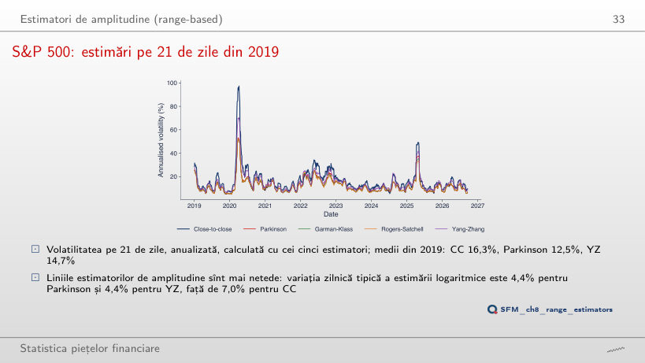
Răspuns
Ambele cresc mult: 30,3% pentru CC, 13,9% pentru Parkinson și 14,8% pentru YZ; la 63 de zile scad la 2,8% și 2,0%. Avantajul estimatorilor de amplitudine este mai mare pe ferestrele scurte: raportul CC/Parkinson este 2,2 la n = 5, 1,6 la n = 21 și 1,4 la n = 63.
Volatilitatea realizată
Varianța realizată din randamentele intrazilnice
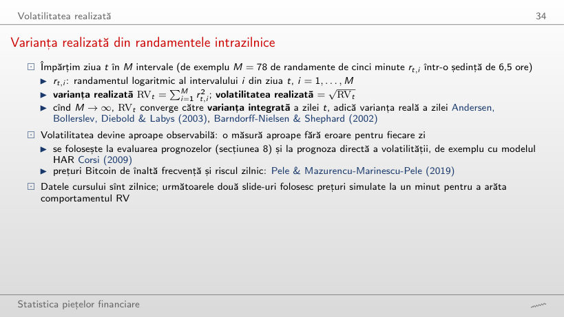
Exemplu lucrat: varianța realizată a unei zile
Răspuns
1,051% (390 de randamente, eroarea +5,1%). Simularea nu are zgomot de microstructură, deci RV converge către varianța integrată cînd M crește: pe cele 60 de zile, eroarea relativă absolută medie scade de la 5,9% (5 minute) la 2,9% (un minut). Cu zgomot, signature plot arată efectul opus la intervalele scurte.
Exemplu simulat: RV urmărește volatilitatea reală
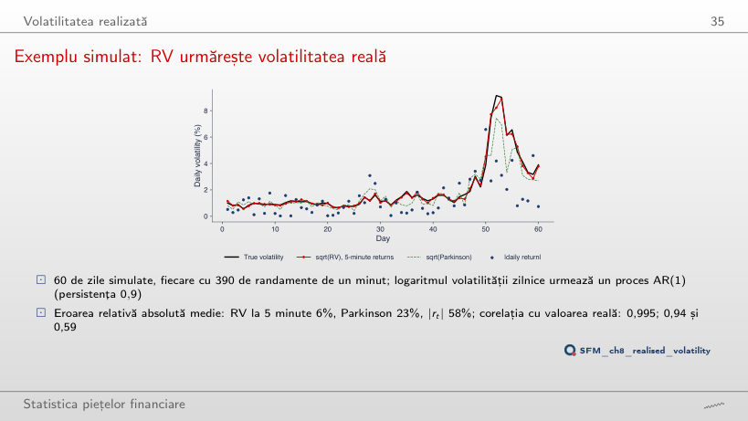
Răspuns
58%, ca |r|: cu M = 1, RV este chiar r², iar corelația cu volatilitatea reală scade la 0,59. La un minut eroarea este 3%, cu corelația 0,997. Parkinson (23%) folosește doar maximul și minimul și se află între cele două extreme.
Zgomotul de microstructură și signature plot
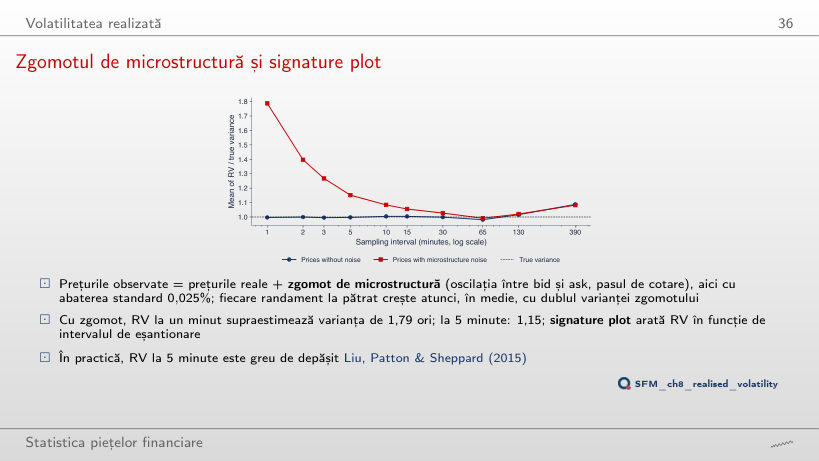
Răspuns
De 4,16 ori în simulare și de 4,15 ori după formula 1 + 2M × varianța zgomotului/varianța reală, cu M = 390: excesul de 0,79 crește cu pătratul zgomotului, la circa 4 × 0,79 = 3,16. La 5 minute (M = 78) raportul este 1,62. Fiecare randament observat la pătrat conține, în medie, de două ori varianța zgomotului.
Volatility clustering
Semnul este imprevizibil, mărimea nu
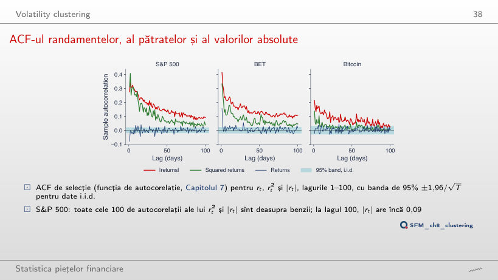
Răspuns
72 pentru |r| și 40 pentru r². Banda ±1,96/√T se lărgește de la ±0,020 la ±0,030 cînd T scade de la 9 240 la 4 202, iar ρ̂₁₀₀(|r|) scade de la 0,09 la 0,02. La lagurile mici volatility clustering rămîne evident; pentru BET din 2010, 53 de laguri ale lui |r| sînt în afara benzii.
Interpretarea volatility clustering pe trei piețe
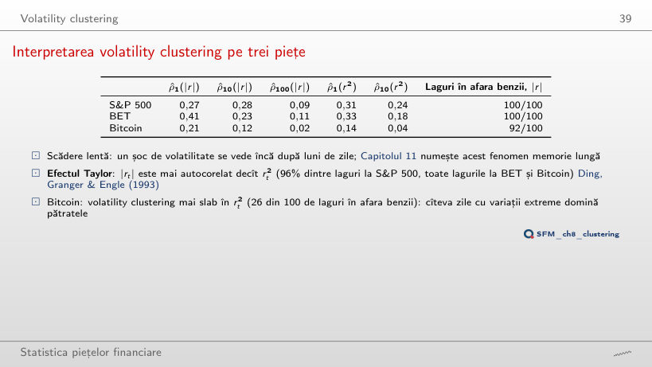
Autocorelațiile lui |r| și r² (în afara benzii: din 100 de laguri)
Răspuns
d = 1,00 (0,414): |r| este mai autocorelat decît r² (0,333), efectul Taylor. Optimul depinde însă de serie și de lag: la lagul 1, d = 1,75 pentru S&P 500 și 0,75 pentru Bitcoin; la lagul 10, 1,25, 0,75 și 0,50. Puterile mari dau o pondere mare cîtorva zile extreme.
Amestecarea zilelor: un test pentru volatility clustering
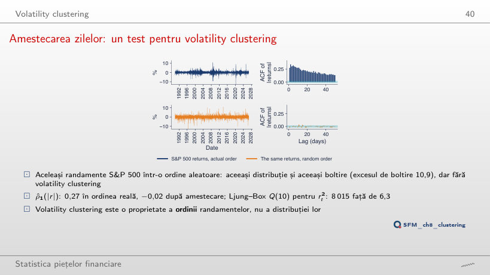
Răspuns
ρ̂₁(|r|) rămîne 0,23, pentru că patru din cinci perechi de zile consecutive rămîn în același bloc, dar Q(10) pentru r² scade de la 8 015 la 1 413: lagurile mai lungi decît blocul își pierd structura. Cu blocuri de 63 de zile, ρ̂₁(|r|) = 0,27 și Q(10) = 7 038. Excesul de boltire rămîne 10,9 în toate cazurile.
Testarea volatility clustering: Ljung–Box pe randamentele la pătrat
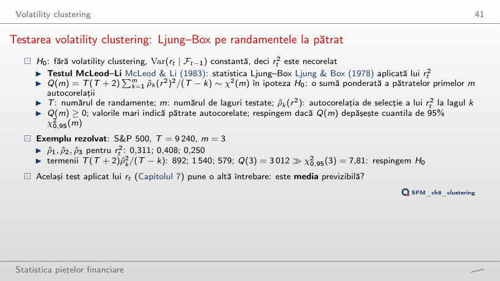
Exemplu lucrat: testul McLeod–Li
Răspuns
Termenii T(T + 2)ρ̂²/(T − k) sînt 892; 1 540; 579, deci Q(3) = 3 012, mult peste χ²0,95(3) = 7,81. Q(3) pentru randamente este 57,7: respinge și el, dar este de 52 de ori mai mic. Varianta 8 958 uită să ridice autocorelațiile la pătrat, iar 0,33 uită factorul T(T + 2)/(T − k).
Testul ARCH-LM (Engle, 1982)
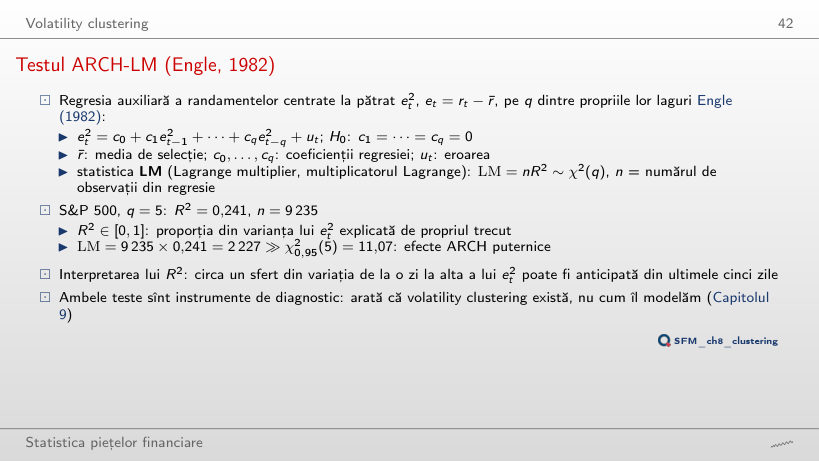
Exemplu lucrat: testul ARCH-LM
Răspuns
LM = 9 235 × 0,2412 = 2 227, față de χ²0,95(5) = 11,07 (p < 0,001). R² spune că circa un sfert din variația lui e²ₜ de la o zi la alta este anticipată de ultimele cinci zile. Varianta 4 535 folosește R în loc de R², iar 1,21 înmulțește R² cu q în loc de n.
Testele de volatility clustering pe șase serii
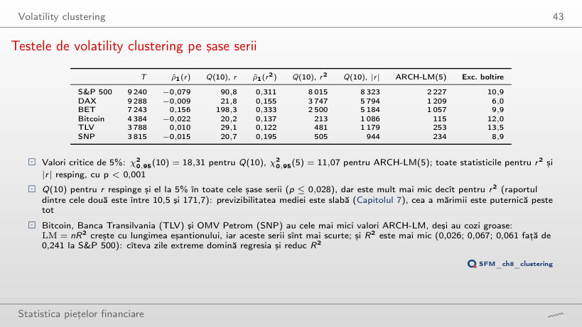
Teste pe randamentele zilnice (cu roșu: p-value sub 0,05)
Răspuns
LM = nR²: Bitcoin are mai puțin de jumătate din observațiile S&P 500 (4 379 față de 9 235 în regresie), iar R² este 0,026 față de 0,241, pentru că cîteva zile extreme domină regresia pătratelor. Testul respinge totuși puternic (p < 0,001), iar Q(10) pentru |r|, mai puțin sensibil la zilele extreme, este 1 086. Q(10) pentru r respinge și el în toate cele șase serii (p ≤ 0,028), dar este de 10,5–171,7 ori mai mic decît pentru r².
Volatility clustering produce cozi groase
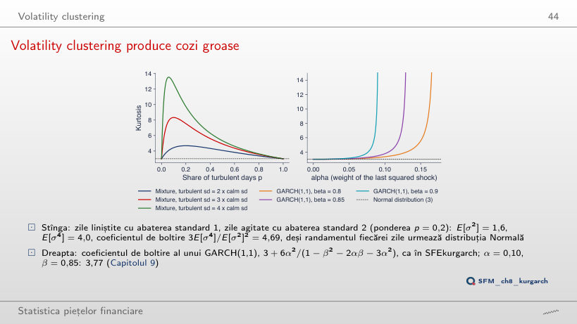
Răspuns
La p = 0,1, cu boltirea 8,33; la p = 0,5 boltirea este 4,92, iar la p = 0,02, 5,80. Cînd p tinde spre 0 sau spre 1, amestecul devine o singură distribuție Normală, cu boltirea 3. Pentru raportul 2 și p = 0,2, ca pe slide, boltirea este 4,69.
Comportamentul pe termen lung, VIX și efectul de levier
Volatilitatea în trei decenii
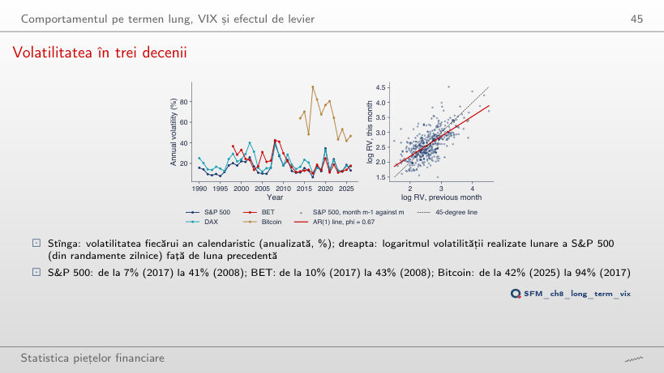
Răspuns
φ̂ = 0,53 (SE 0,06) pe 201 luni, timpul de înjumătățire 1,1 luni și nivelul pe termen lung 12,9%; din 2000, φ̂ = 0,66. Eșantionul din 2010 nu conține criza lungă din 2008–2009, iar episodul din 2020 a fost scurt, deci revenirea la medie pare mai rapidă.
VIX față de volatilitatea care a urmat
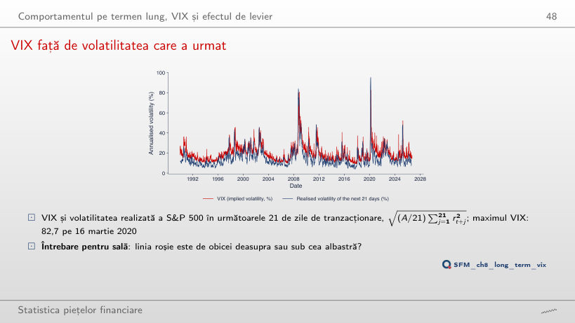
Răspuns
Deasupra, în 86% din cele 9 199 de zile; media VIX este 19,4%, media volatilității realizate 15,3%, o diferență de 4,1 puncte. Este prima de risc a varianței: investitorii plătesc pentru a fi asigurați împotriva salturilor de volatilitate. Cu h = 63 de zile, VIX este deasupra în 82% din zile.
Interpretarea relației dintre volatilitatea implicită și cea realizată
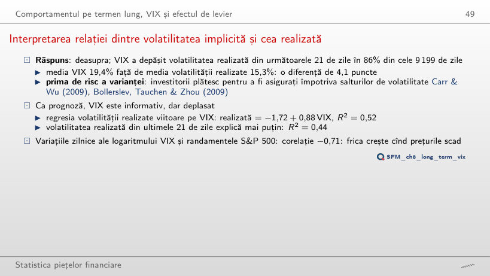
VIX și volatilitatea realizată în următoarele h zile
Răspuns
Ambele R² scad, la 0,37 și 0,26, iar VIX rămîne mai informativ; regresia devine realizată = −0,16 + 0,81 VIX. După 2010 sînt mai puține episoade lungi de volatilitate ridicată, deci mai puțină variație de explicat. Panta sub 1 arată că VIX este informativ, dar deplasat ca prognoză.
Știrile negative cresc volatilitatea viitoare
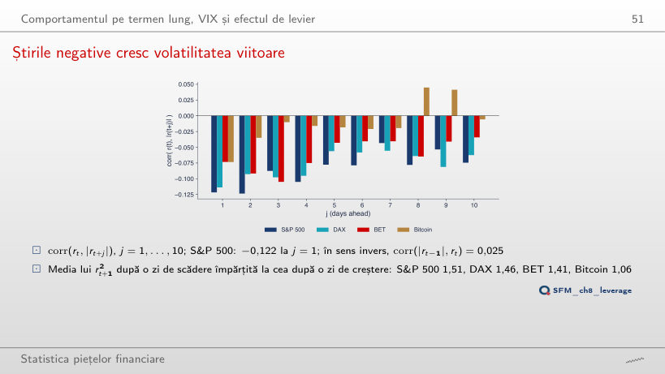
Răspuns
Efectul devine mai puternic: corelația este −0,141, iar raportul dintre media lui r²ₜ₊₁ după o zi de scădere și după o zi de creștere urcă de la 1,41 la 1,86. La S&P 500 corelația rămîne −0,122. Bitcoin are cea mai slabă asimetrie (raportul 1,06).
Volatilitatea neparametrică în funcție de randamentul de ieri
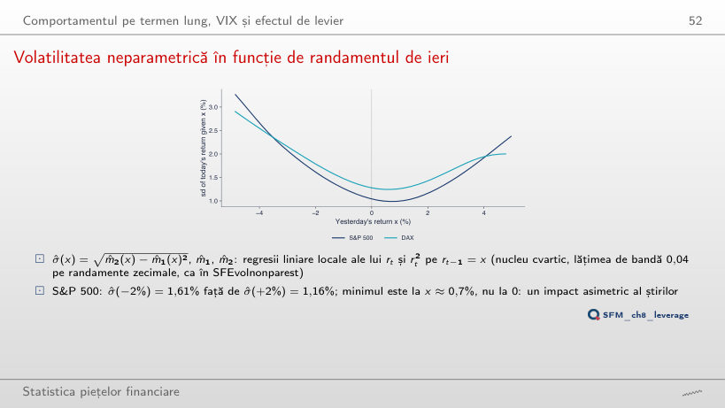
Răspuns
Din cauza asimetriei: după o zi de creștere moderată urmează, în medie, ziua cea mai liniștită, iar după o scădere de aceeași mărime una mai agitată; σ̂(−2%) = 1,61% față de σ̂(+2%) = 1,16% (raportul 1,39), la DAX 1,79% față de 1,43%. Media randamentelor, 0,03% pe zi, este prea mică pentru a explica deplasarea. Cu h = 0,01 minimul se mută la 0,17%, cu h = 0,10 la 1,61%, dar σ̂(−2%) > σ̂(+2%) rămîne.
Evaluarea prognozelor de volatilitate
Funcții de pierdere: MSE și QLIKE
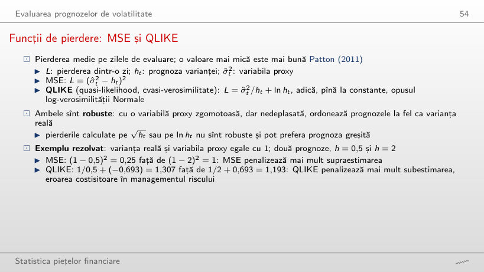
Exemplu lucrat: MSE și QLIKE
Răspuns
MSE preferă h = 0,5 (0,25 față de 1), QLIKE preferă h = 2 (1,193 față de 1,307): MSE penalizează mai mult supraestimarea, QLIKE subestimarea, eroarea costisitoare în managementul riscului. QLIKE are minimul la h = proxy. MSE devine indiferent între cele două prognoze la proxy = 1,25, iar QLIKE la proxy = 2 ln 2/1,5 = 0,924.
S&P 500: compararea prognozelor
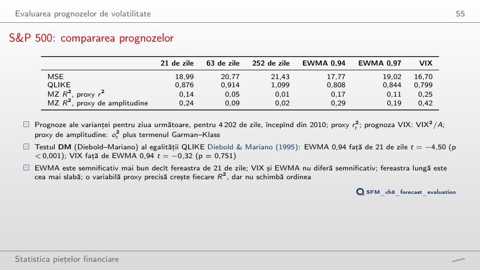
Prognoze ale varianței pentru ziua următoare (cu verde: cea mai mică pierdere)
Răspuns
VIX (0,799), urmat de EWMA 0,94 (0,808), dar diferența nu este semnificativă: testul DM dă t = −0,32 (p = 0,751). EWMA 0,94 este semnificativ mai bună decît fereastra de 21 de zile (t = −4,50, p < 0,001), iar fereastra de 252 de zile este cea mai slabă (1,099). Cu proxy de amplitudine, VIX coboară pe locul cinci (0,635): acest proxy este în medie mai mic decît r² (0,82 față de 1,18), pentru că nu vede Cov(o, c), iar VIX, care depășește deja volatilitatea realizată, pierde cel mai mult.
Prognozele din 2020
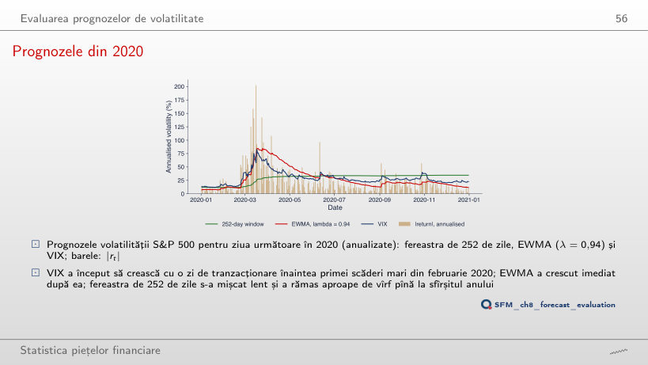
Răspuns
EWMA 79,0% pe 29 octombrie, VIX 80,9% pe 21 noiembrie, fereastra de 252 de zile 41,1% pe 31 decembrie. Fereastra lungă cumulează șocurile și scade doar cînd acestea ies din ea, deci vîrful ei vine tîrziu și este mai mic. QLIKE mediu în 2008: 3,132 pentru fereastra de 252 de zile, 2,420 pentru EWMA, 2,350 pentru VIX.
Alegerea lui λ după QLIKE
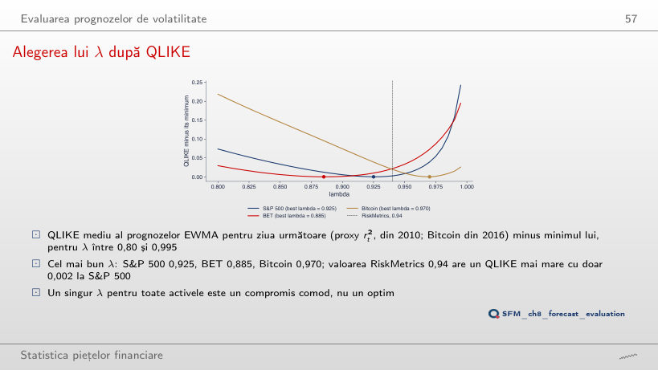
Răspuns
0,940, valoarea RiskMetrics (diferența de QLIKE la 0,94 este sub 0,001); din 2020, 0,920; din 2016, 0,930. Pentru BET cel mai bun λ este între 0,885 și 0,900, pentru Bitcoin între 0,970 și 0,995. Un singur λ pentru toate activele și perioadele este un compromis comod, nu un optim.
Randamente logaritmice zilnice, în %: S&P 500 și DAX din ianuarie 1990, BET din septembrie 1997, Bitcoin din septembrie 2014 (7 zile pe săptămînă), Banca Transilvania (TLV) și OMV Petrom (SNP) din 2010, din prețul ajustat, pînă la 18 septembrie 2026; cele două zile greșite ale TLV din mai 2016 sînt eliminate. Prețuri OHLC: S&P 500 din 2008, DAX din 2006, Bitcoin din 2014, TLV și SNP din 2010 (acțiunile ajustate cu factorul prețului de închidere). VIX: închiderile zilnice, pe calendarul S&P 500. Prețuri EODHD. Ziua simulată OHLC, simularea eficienței (1 000 de ferestre), prețurile simulate la un minut și amestecarea randamentelor sînt cele din curs (același cod, aceeași sămînță a generatorului); volatilitățile, estimatorii de amplitudine, autocorelațiile, testele Ljung–Box și ARCH-LM, volatilitățile anuale și lunare, comparația cu VIX, corelațiile de levier, curbele neparametrice și pierderile prognozelor sînt recalculate în browser din aceleași date. Alte semințe, alte ferestre ale simulării, alte niveluri ale zgomotului, amestecarea pe blocuri, alte începuturi ale eșantionului, alte orizonturi, laguri și lățimi de bandă sînt rulări suplimentare ale aceluiași cod.